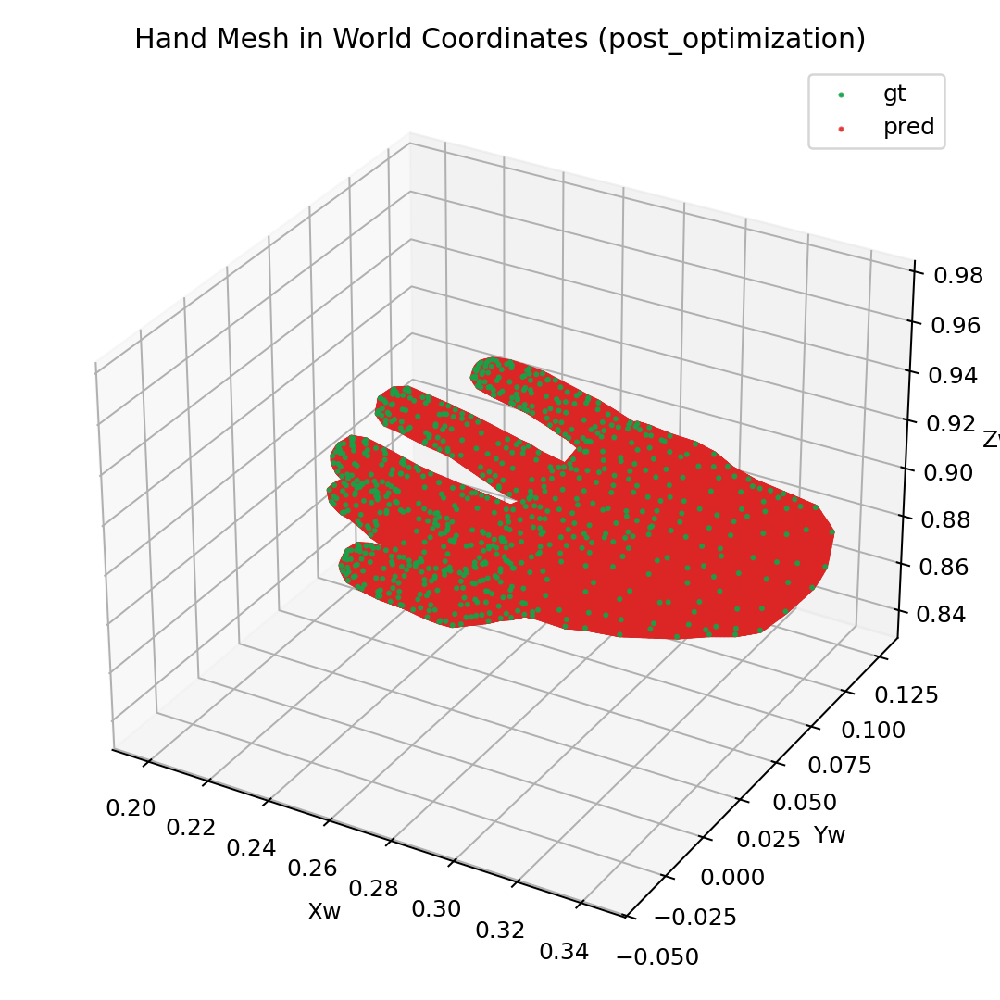
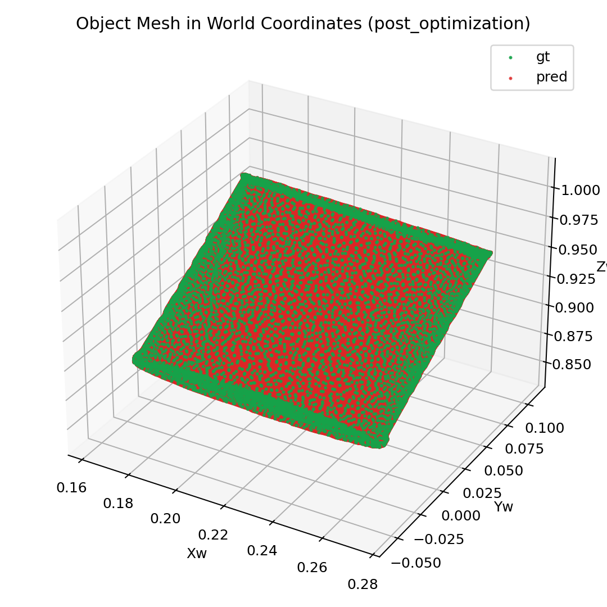
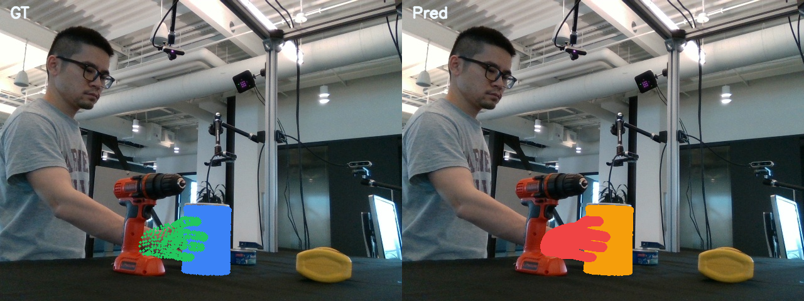
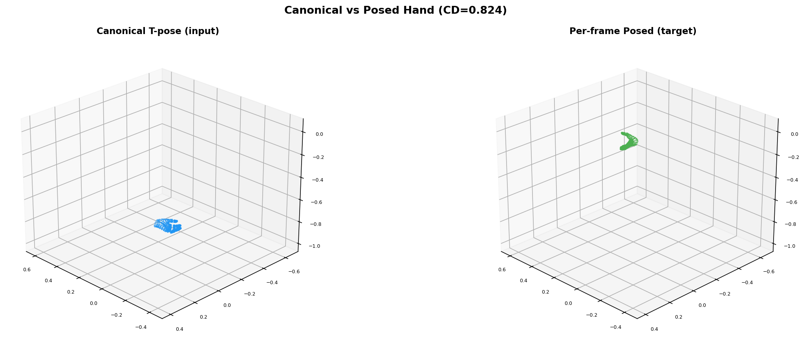
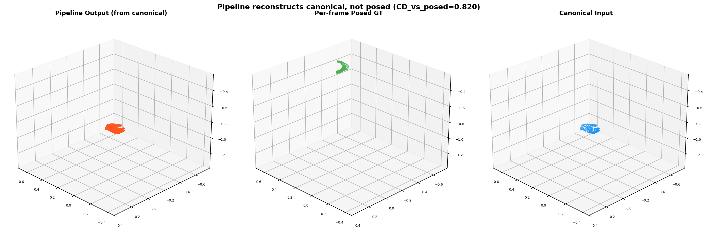
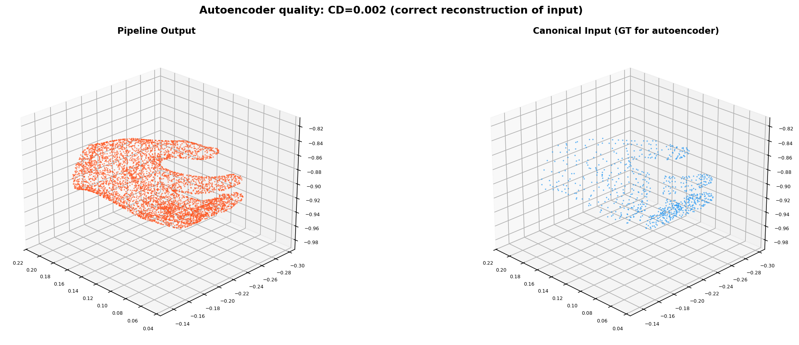

Goal: (1) Fix the denormalization bug that inflated chamfer by 2.5–7.6x. (2) Test canonical T-pose mesh as encoder input to measure the deformation gap the pipeline needs to learn.
The encoder normalizes vertices with uniform scaling:
normalized = (v - center) * (0.99999 / max_extent) # uniform: same scale for all axes
But denormalize_vertices_from_reference_bounds was inverting with per-axis scaling:
v = ref_min + (normalized + 0.5) * ref_span # per-axis: different scale per axis → distortion
Per-axis scaling distorts the aspect ratio, introducing systematic chamfer error. The correct inverse:
v = normalized / (0.99999 / max_extent) + center # uniform: matches encoder
Point-level verification:
| Method | Sample point reconstruction error |
|---|---|
| Per-axis denorm (old, buggy) | [0.000, 0.00035, 0.00222] |
| Uniform denorm (new, fixed) | [0.000, 0.000, 0.000] |
| Metric | Old (per-axis denorm) | Fixed (uniform denorm) | Improvement |
|---|---|---|---|
| Pre-opt CD hand | 0.00541 | 0.00230 | 2.4x |
| Post-opt CD hand | 0.00586 | 0.00232 | 2.5x |
| Pre-opt CD object | 0.00899 | 0.00119 | 7.6x |
| Post-opt CD object | 0.00921 | 0.00120 | 7.7x |
Pre-training hand: GT (blue) vs pred (green). CD=0.0023. Already well-aligned with identity init.

Post-training (100 steps): CD=0.0023. Quality maintained.
Pre-training object: CD=0.0012. Correct shape from step 0.

Post-training (100 steps): CD=0.0012. Quality maintained.

Pre-training: GT (left) vs pred (right) image overlay.
Post-training: GT vs pred overlay. Meshes project correctly onto the image.
Feed the MANO canonical T-pose mesh (pose=0, shape=0, orient=identity, transl=0) to the encoder instead of the per-frame posed mesh. The question: what does the pipeline output?

Left: canonical T-pose hand (encoder input). Right: per-frame posed hand (target). Chamfer between them = 0.824 — this is the deformation the pipeline needs to learn.
| Metric | Value |
|---|---|
| CD(output, canonical input) | 0.0025 — near-perfect autoencoder reconstruction |
| CD(output, posed target) | 0.820 — no deformation learned |
| CD(canonical, posed) | 0.824 — the full deformation gap |

Orange: pipeline output (from canonical input). Green: per-frame posed GT. Blue: canonical input. The pipeline reconstructs the T-pose perfectly (overlaps with blue) but does not deform toward the posed target (green).

Pipeline output (orange) vs canonical input (blue). CD=0.0025 — the encoder→bridge→decoder pipeline faithfully reconstructs whatever mesh it receives.
With identity init + uniform denorm, the pipeline (encoder → bridge → STream3R → bridge → decoder) faithfully reconstructs any input mesh with CD=0.002. The Trellis.2 VAE roundtrip is correct. The bridge preserves latents. The decoder produces correct meshes.
The current loss L2(refined_latents, encoder_latents.detach()) trains the bridge to be identity. When the encoder sees canonical input, the loss forces the decoder to output canonical. To learn canonical → posed, we need a loss that compares the decoded mesh to the posed GT mesh:
# Current: trains bridge to preserve input latents (autoencoder) loss = L2(output_proj(global_blocks(input_proj(slat_canonical))), slat_canonical) # Needed: trains global_blocks to deform canonical → posed loss = chamfer(decoder(output_proj(global_blocks(input_proj(slat_canonical)))), posed_gt_mesh)